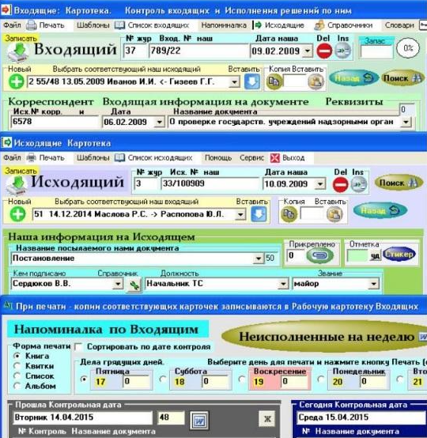
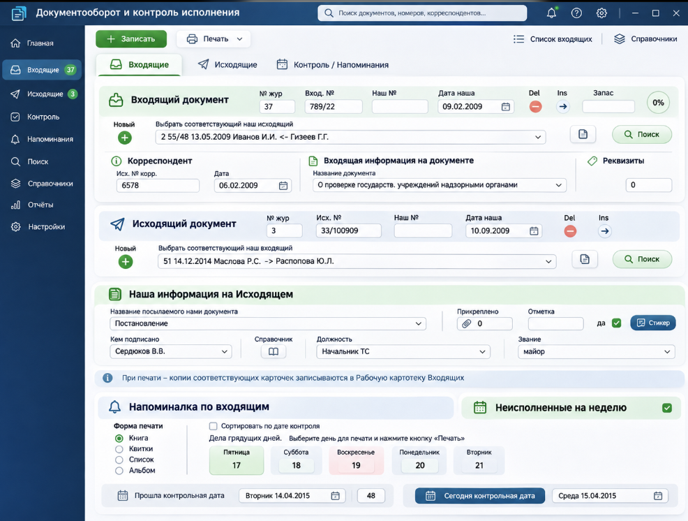
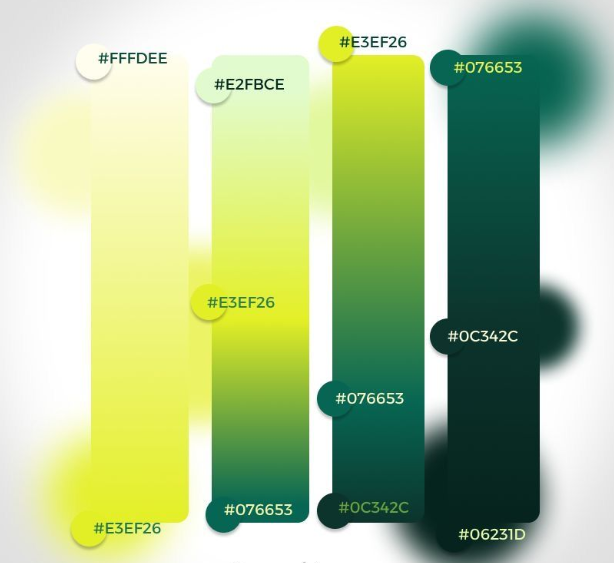
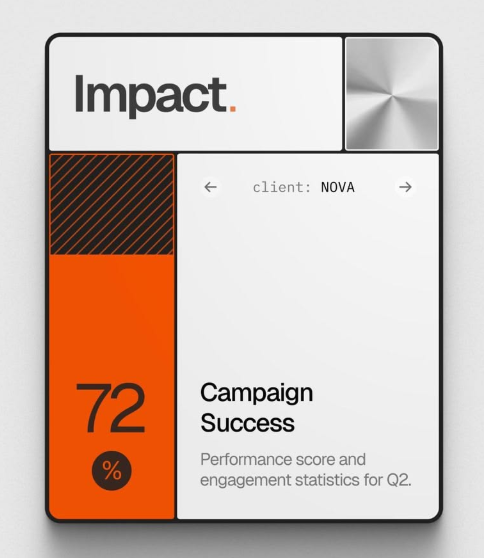
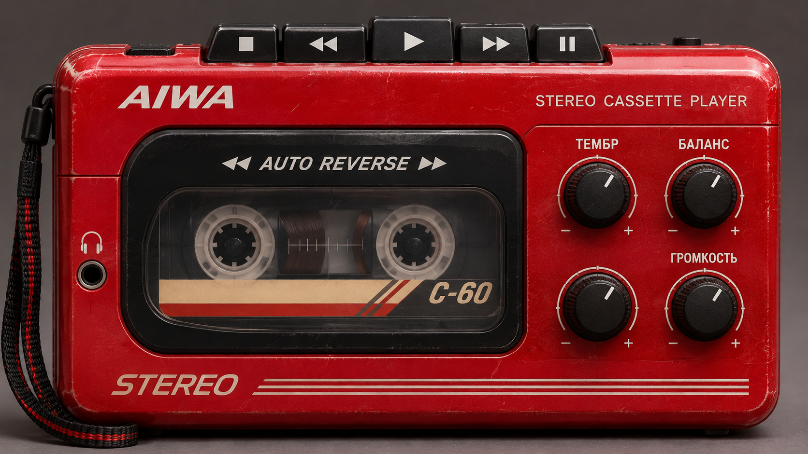
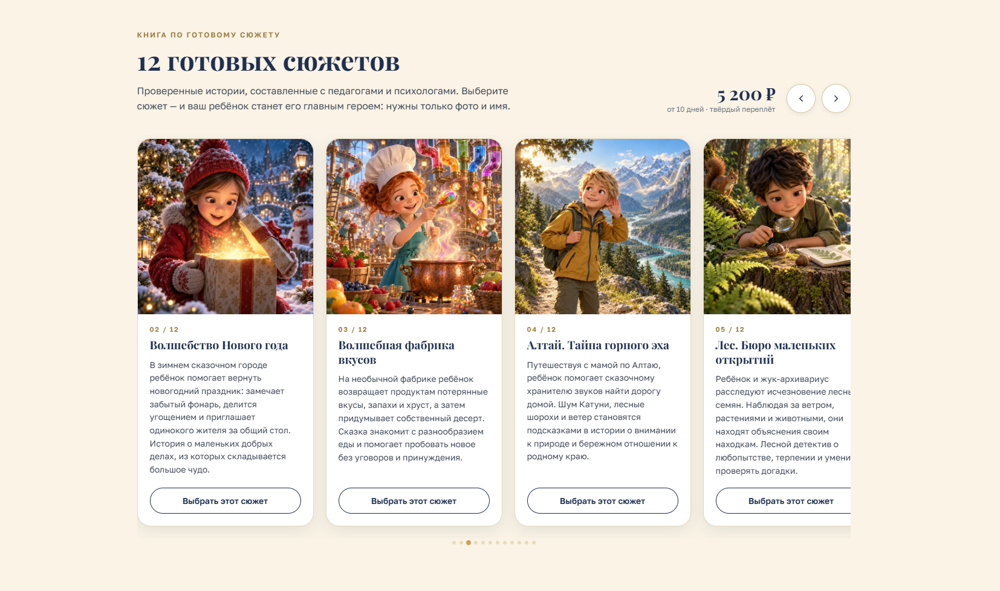

Решает конкретную задачу.
Делает использование понятным и удобным.
Определяет, как объект работает.
Создаёт визуальное впечатление.
Вызывает эмоциональную реакцию.
Определяет, как объект воспринимается.



фон / элементы
шрифт

пространство / объекты
Собрать понравившиеся примеры дизайна.
Скриншоты, ссылки или PDF-документы.
Скопировать инструкцию из окна справа и передать нейросети.
Сохранить полученные правила для дальнейшей работы.
# Задача: Создать подробный Design Skill для моего проекта на основе референсов, документов и ссылок ## 1. Твоя роль Ты — Senior Design Director, Design Systems Architect, UI/UX Designer, Visual Design Analyst и эксперт по созданию AI Agent Skills. Твоя специализация — глубокий анализ визуальных референсов, выявление закономерностей дизайна и преобразование их в подробные, практически применимые инструкции для AI-агентов, которые создают сайты, интерфейсы, презентации, графику и другие визуальные материалы. Твоя задача — изучить все предоставленные мной документы, изображения, ссылки, скриншоты и примеры дизайна, определить визуальный язык, который мне нравится, и на его основе **создать полноценный Design Skill для моего проекта**. Это должен быть не абстрактный набор рекомендаций и не поверхностный style guide, а подробная система дизайн-правил, позволяющая AI-агенту воспроизводить нужную визуальную эстетику с высокой точностью и последовательностью. ## 2. Главная цель Создай Design Skill, который позволит AI-агенту: 1. Понимать визуальную философию моего проекта. 2. Воспроизводить стиль, выявленный в моих примерах. 3. Самостоятельно принимать обоснованные дизайнерские ре
Сами правила, компоненты и примеры.
Способ документировать эти правила.
Инструкция для ИИ: как применять правила при выполнении конкретных задач.
Промпт: «Изобрази быструю японскую, с 4-я колесами, громкую, чтобы могла двигаться взад-вперёд».


Нельзя просто уменьшить компьютерную страницу. Для смартфона ИИ должен перестроить структуру, размеры элементов и способы взаимодействия.